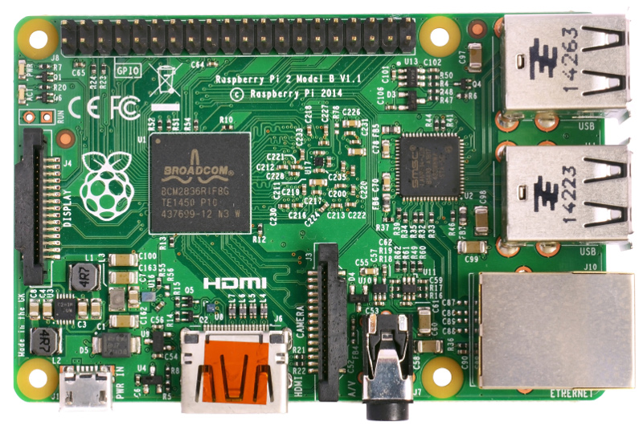
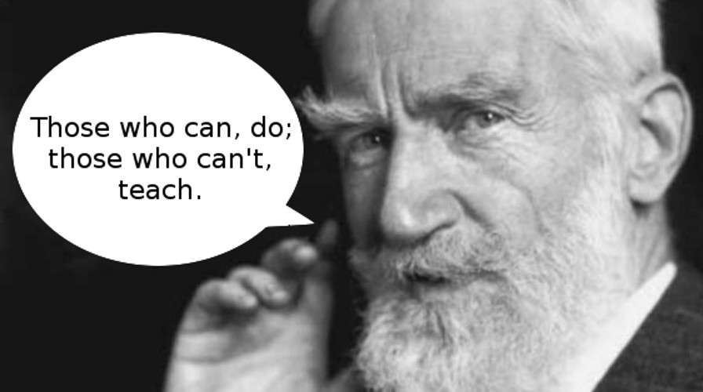
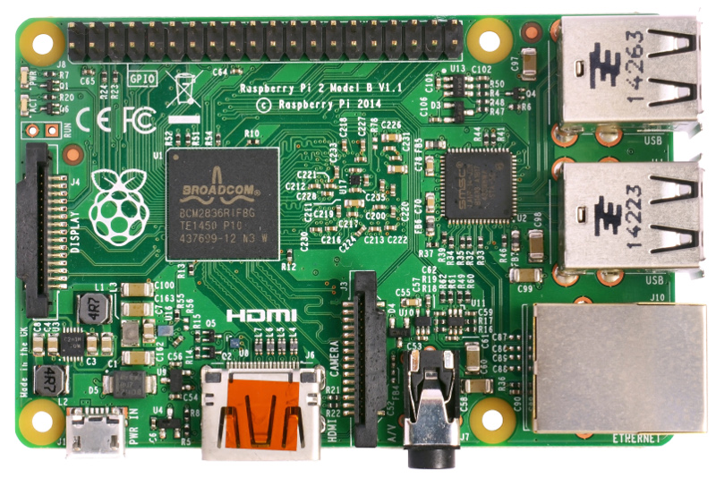
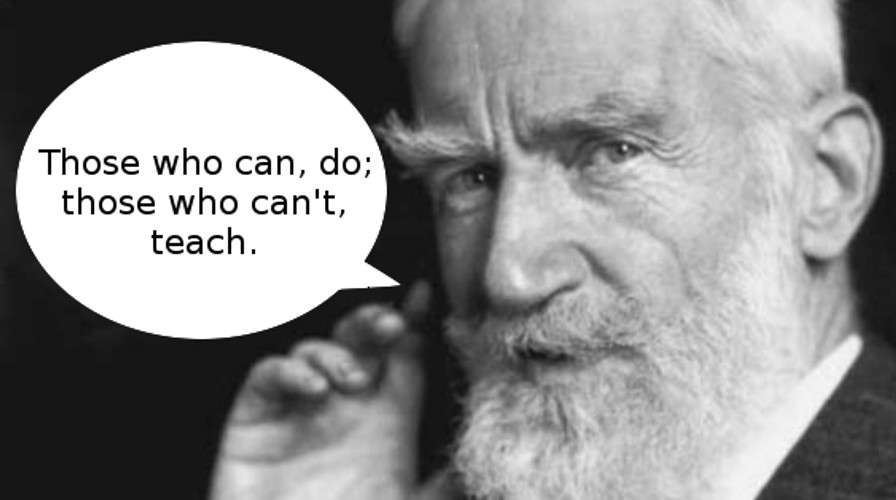

Education
Education
Education
Nicholas H.Tollervey / @ntoll

(Free download from O'Reilly's website)
A good developer is always learning and re-evaluating
in order to improve.
Story #1
Personal Education

Kata

Choose a problem

In a dojo we...
- Learn by doing (deliberate practice)
- Fail safely with sympathy
- Teach one another
- Explain ourselves to our peers
- Explore each other's solutions
- Build a community
Story #2
Community Education

 



George Bernard Shaw
Teachers
Teaching is the one profession that
creates all the other professions.
Teaching is a calling (you're
certainly not doing it for the money or "perks").
Teaching is the hardest job
I've ever had to do.

Kids
"Asking what sort of education and learning our community
supports is how we decide what sort of community we
become.
For it is through education and learning that we engage
with our future colleagues, friends and supporters."
Nicholas Tollervey, 2015. :-)
Inventing the Future..?
Story #3
National Education
My First Computer

1 Million 11-year olds

LIVE DEMO!!!!!

Homework
- Organise a dojo with your buddies!
- Organise an education track for teachers and kids!
- Organise the Indian micro:bit!
Due at PyCon India 2016
:-)